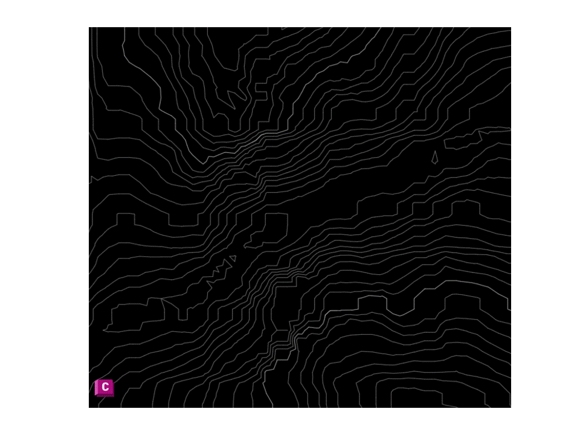
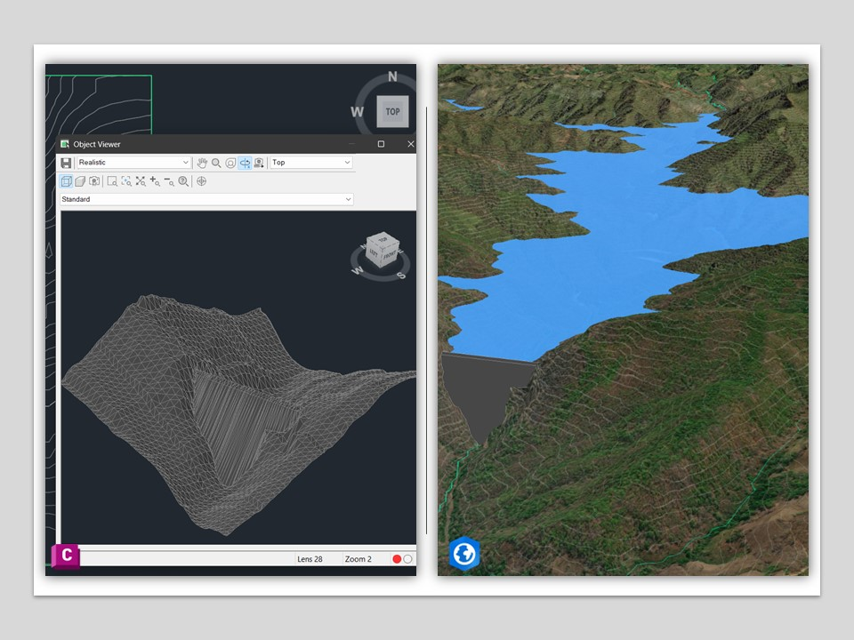

This project demonstrates the integration of CAD and GIS workflows for terrain modeling and infrastructure visualization. Contour data and topographic information are processed in AutoCAD Civil 3D to generate a triangulated surface model (TIN). The terrain model is then integrated with geospatial data to visualize infrastructure and reservoir environments within a GIS-based context.
This analysis was performed using DEM data derived from SRTM (Shuttle Radar Topography Mission), © NASA / USGS.